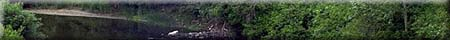
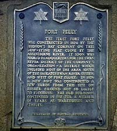
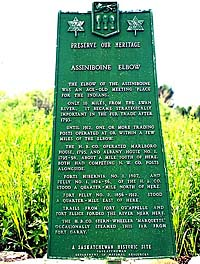

|
|
"Environmentally Sensitive Area". Please be careful where you walk and try not to disturb the natural environment. For additional information please contact Tourism Saskatchewan. | ||
| Fort Pelly | |||
| GPS: | 51d 46.69m N | 102d 00.17m W | 1382 feet |
| Location: | 5 kms west of the town of Pelly and 10 kms south. | ||
 The first Fort Pelly was constructed in 1824 by the Hudson's Bay Company on this low-lying flat close by the Assiniboine River. It soon was named headquarters for the Swan River district of the company's organization -- a district which included most of the area south of the Saskatchewan River system and west of Fort Ellice. In 1856, a new post was constructed a few yards from this site on higher ground not so liable to flooding. The old buildings continued in use for a number of years as warehouses and stables. | |||
 The elbow of the Assiniboine River was an age-old meeting place for Indians. Only ten miles from the Swan River, it became strategically important in the fur trade after 1793. Until 1912, one or more trading posts operated at or within a few miles of the elbow. The H.B.Co. operated Marlboro House, 1793, and Albany House No. 1, 1795-98, about a mile south of here. Both had competing N.W.Co. posts alongside. Forts Hibernia No. 1, 1807, and Pelly No. 1, 1824-56, of the H.B.Co. stood a quarter mile north of here. Fort Pelly No. 2, 1856-1912, stood a quarter mile east of here. Trails from Fort Qu'Appelle and Fort Ellice forded the river near here. The H.B.Co. stern-wheeler 'Marquette' occasionally steamed this far from Fort Garry. | |||